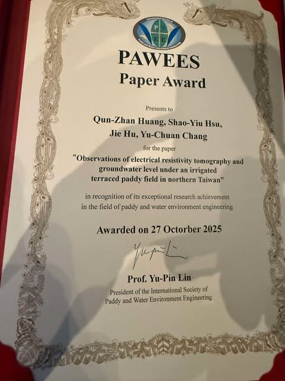
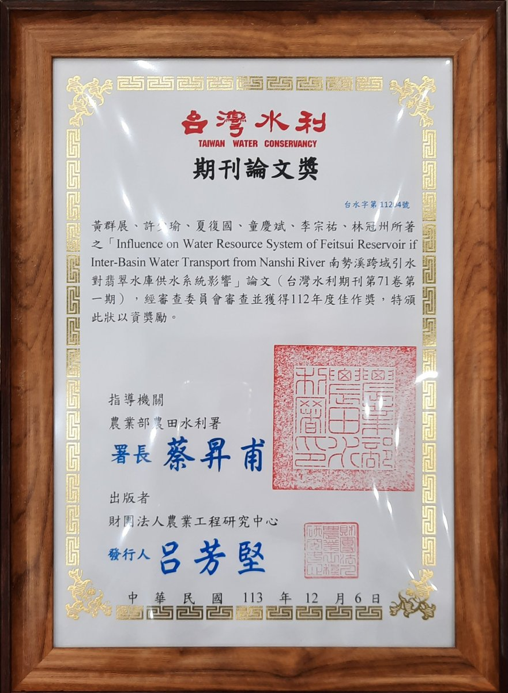
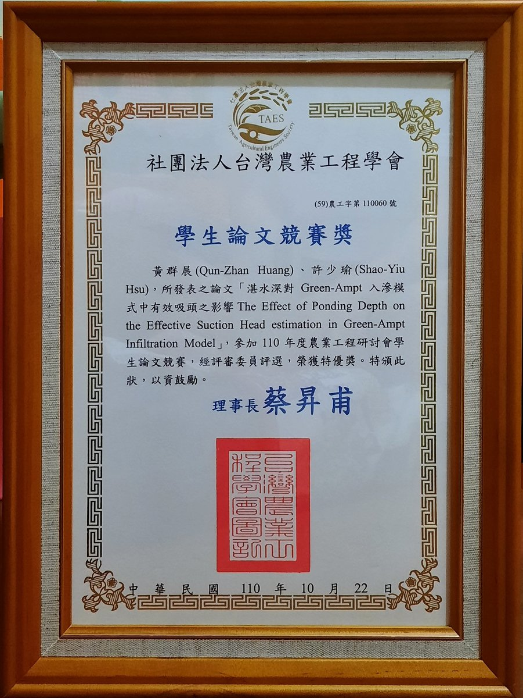

Curriculum Vitae
Education
2020 – present
Ph.D. candidate, Department of Bioenvironmental Systems Engineering, National Taiwan University, Taipei, Taiwan
Advisor: Prof. Shao-Yiu Hsu
Advisor: Prof. Shao-Yiu Hsu
2015 – 2017
M.S., Graduate Institute of Hydrological and Oceanic Sciences, National Central University, Taoyuan, Taiwan
2011 – 2015
B.S., Department of Earth Sciences, National Central University, Taoyuan, Taiwan
Experience
2018/09 – 2020/07
Research Assistant, Department of Bioenvironmental Systems Engineering, National Taiwan University, Taipei, Taiwan
Awards
2025
PAWEES Paper Award, International Society of Paddy and Water Environment Engineering (awarded 27 Oct 2025) — Huang et al. (2024), Paddy and Water Environment


2025
114年度台灣水利期刊論文獎優等 — 劉哲佑等，《台灣水利》72(4)
2024
《台灣水利》期刊論文獎 112年度佳作（113年12月6日頒發）— 黃群展等（2023），〈南勢溪跨域引水對翡翠水庫供水系統影響〉，《台灣水利》71(1)


2021
台灣農業工程學會 110年度農業工程研討會學生論文競賽 特優獎 — 黃群展、許少瑜〈湛水深對 Green-Ampt 入滲模式中有效吸頭之影響〉


2018
Outstanding Paper Award, Taiwan Agricultural Engineers Society (107年度農工論文獎)
2016
Taiwan Water Conservancy Paper Award (105年台灣水利論文獎)
Publications
11 international journal articles, 6 domestic journal articles, and 13 international conference presentations — see Publications.